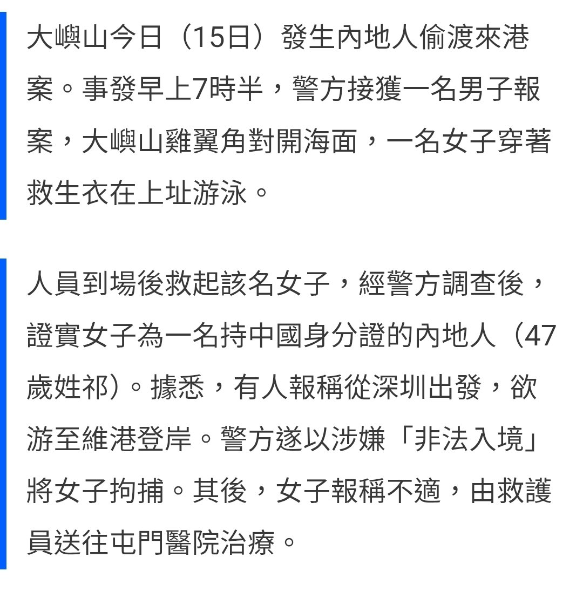

RedFox（2代目）🇲🇴🇭🇰
@FoxRed695449
理论上来说两岸的法都违反了
按照大陆的法律也算触犯偷越国（边）境罪
可以参考《中华人民共和国出境入境管理法》第八十九条：本法下列用语的含义： 出境，是指由中国内地前往其他国家或者地区，由中国内地前往香港特别行政区、澳门特别行政区，由中国大陆前往台湾地区。 入境，是指由其他国家或者地区进入中国内地，由香港特别行政区、澳门特别行政区进入中国内地，由台湾地区进入中国大陆。
一般偷渡到港的人也是会被抓的
但目前的两岸关系会不会选择性执法就是未知数了

联合早报 Lianhe Zaobao
@zaobaosg
台湾海巡署证实，在网传视频中称赴台插五星旗的中国大陆男子，的确在台湾桃园拍摄，但至于他是不是偷渡上岸，则正深入追查中。
https://t.co/YDIE5kMrzh